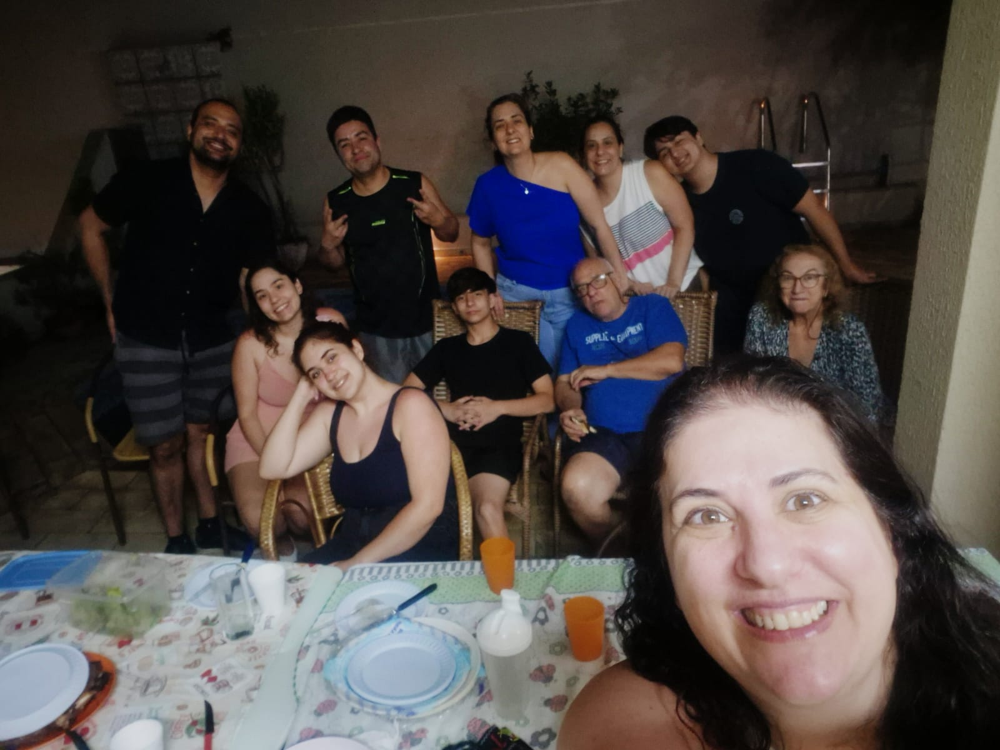
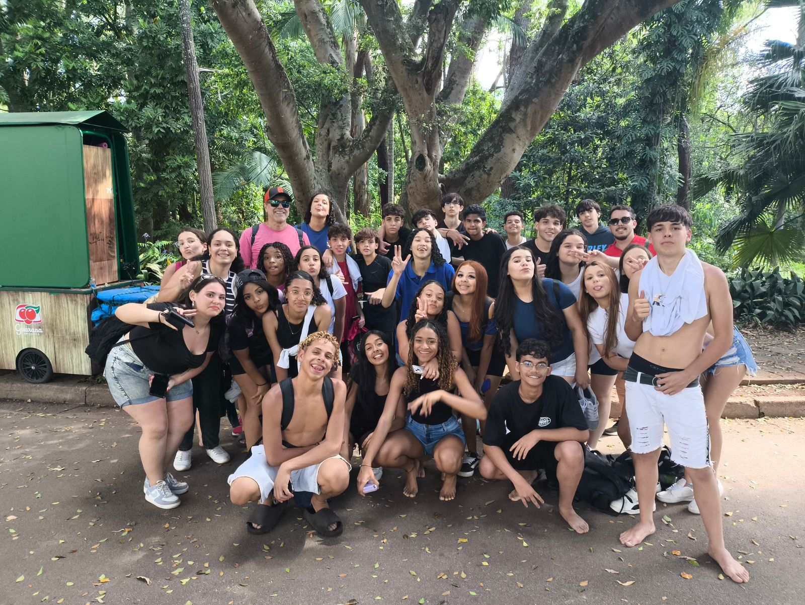
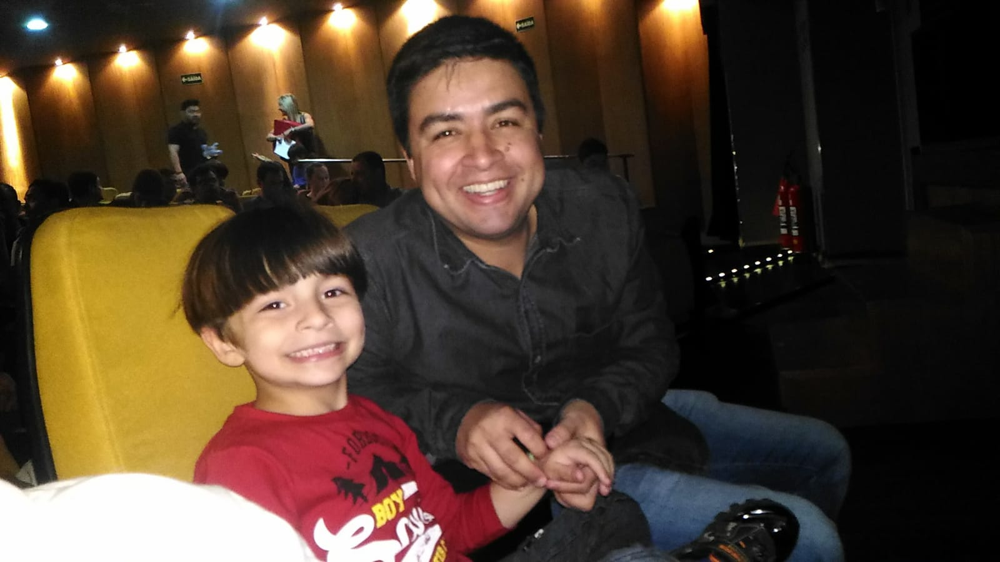

Quem sou eu?
Oi! Eu sou o Daniel. Aqui você vai conhecer algumas curiosidades sobre mim, meus filmes favoritos, os lugares que já visitei e os destinos que ainda quero conhecer.



Curiosidades
- Tenho uma pequena chance de ser primo de goleiro de futebol.
- Já dormi por 15 horas seguidas.
- Tem duas ruas com nomes do meu sobrenome: Pedro Rissato e José Pavesi.
- Tem a chance do Caso Paulinho Pavesi ser da minha família.
- Já quase fiquei de cadeira de rodas com 5 anos.
- Torço pro São Paulo e tenho uma camisa com a assinatura do Rogério Ceni.
Filmes favoritos
Alguns dos filmes que eu mais gosto.
Lugares que já visitei
Algumas das viagens que marcaram minha vida.
Lugares que quero visitar
Destinos que eu ainda sonho em conhecer.